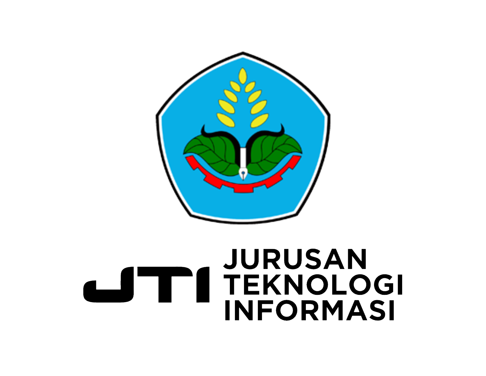
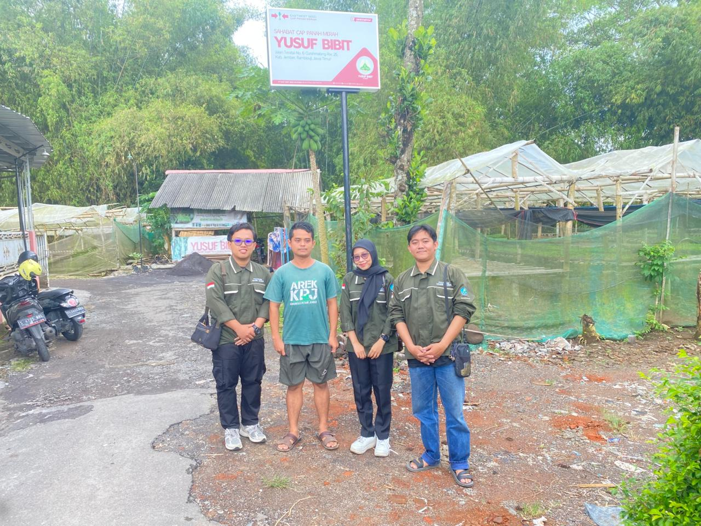

Welcome to Smart Pot
Pantau kelembapan tanah, suhu, kelembapan udara, dan cahaya secara real-time, lalu biarkan sistem menyiram tanamanmu secara otomatis.

About Us
Smart Pot merupakan platform monitoring dan kontrol penyiraman tanaman berbasis Internet of Things (IoT) yang dirancang untuk membantu pengguna dalam mengelola penyiraman tanaman secara lebih efektif dan efisien. Sistem ini memanfaatkan sensor kelembapan tanah untuk memantau kondisi media tanam secara real-time serta mengendalikan proses penyiraman secara otomatis melalui website.
- Monitoring kelembapan tanah secara real-time..
- Kontrol penyiraman manual, otomatis maupun waktu penjadwalan melalui website.
- Pemantauan suhu dan kelembapan udara secara online.
- Riwayat monitoring dan penyiraman tersimpan dan dapat diakses kapan saja.
Team :
Ahmad Baidhowi Alimudin | E32232379
Afi Wisnu Wardana | E32232380
Zamira Areta Arkhab | NIM. E32231320
Instansi :
Politeknik Negeri Jember
Jurusan :
Teknologi Informasi
Program Studi :
Teknik Komputer
Dosen Pembimbing :
Victor Phoa S.Si., M.Cs.
Judul Tugas Akhir :
Perancangan Sistem Penyiraman Tanaman Multi Pot Berbasis Website Menggunakan Sensor Kelembapan Tanah dan Solenoid Valve.
YUSUF BIBIT
Mitra penelitian dalam pengembangan sistem Smart Pot adalah Yusuf Bibit, sebuah usaha pembibitan tanaman yang bergerak di bidang budidaya dan penjualan berbagai jenis bibit tanaman.
01 DESKRIPSI MITRA
Yusuf Bibit merupakan usaha pembibitan tanaman yang bergerak di bidang budidaya dan penjualan berbagai jenis bibit tanaman buah, tanaman hias, serta tanaman produktif lainnya. Usaha ini berlokasi di Dusun Krajan, Curahmalang, Kecamatan Rambipuji, Kabupaten Jember, Jawa Timur, Kode Pos 68152. Dalam kegiatan operasionalnya, Yusuf Bibit melayani kebutuhan masyarakat, petani, maupun pelaku usaha pertanian yang membutuhkan bibit berkualitas. Proses perawatan tanaman, khususnya penyiraman, masih dilakukan secara manual sehingga membutuhkan waktu dan tenaga yang cukup besar.
02 LAHAN DAN JENIS TANAMAN
Yusuf Bibit memiliki area pembibitan dengan luas 500 meter persegi yang digunakan untuk menampung ribuan bibit tanaman dalam pot. Jumlah bibit tanaman yang dikelola mencapai sekitar 5.000 pot bibit tanaman. Berbagai jenis bibit tanaman yang dibudidayakan oleh mitra meliputi berbagai jenis cabai (cosmo 29, arimbi 85, imola, bara, dan horison 97), tomat, terong, dan kubis. Banyaknya jumlah bibit tanaman yang harus dipantau setiap hari menjadikan proses penyiraman dan pemeliharaan memerlukan sistem yang lebih efisien.

Services
Fitur Unggulan Smart Pot
Monitoring Sensor
Memantau kondisi tanaman secara real-time melalui sensor kelembapan tanah, suhu dan kelembapan udara, intensitas cahaya, serta memantau ketersediaan air. Data sensor ditampilkan secara langsung pada website sehingga pengguna dapat mengetahui kondisi tanaman kapan saja dan di mana saja.
Tiga Mode Kontrol
Sistem menyediakan tiga metode pengendalian penyiraman, yaitu mode manual untuk kontrol langsung oleh pengguna, mode otomatis berdasarkan nilai ambang kelembapan tanah, dan mode penjadwalan yang memungkinkan penyiraman dilakukan sesuai waktu yang telah ditentukan.
Histori Penyiraman
Seluruh aktivitas penyiraman dicatat secara otomatis ke dalam sistem. Pengguna dapat melihat riwayat penyiraman yang berisi waktu pelaksanaan, durasi penyiraman, serta pot yang disiram sebagai bahan monitoring dan evaluasi.
Manajemen Pengguna
Fitur pengelolaan pengguna memungkinkan administrator menambahkan akun pengguna. Sistem ini membantu menjaga keamanan akses serta memudahkan pengaturan hak akses pengguna pada website.
DOKUMENTASI
Dokumentasi Instalasi Mitra
{kind=link}
{kind=link}
{kind=link}
{kind=link}
{kind=link}
{kind=link}
{kind=link}
{kind=link}
{kind=link}
Team
Tim pengembang sistem Smart Pot, menggabungkan teknologi IoT dan keahlian di bidang pertanian cerdas
Ahmad Baidhowi Alimudin
NIM. E32232379
WebsitePerancangan Sistem Penyiraman Tanaman Multi Pot Berbasis Website Menggunakan Sensor Kelembapan Tanah dan Solenoid Valve.

Afi Wisnu Wardana
NIM. E32232379
Aplikasi MobileRancang Bangun Sistem Penyiraman Multi Pot Otomatis Menggunakan Solenoid Valve Dan Sensor Kelembapan Berbasis Aplikasi Mobile

Zamira Areta Arkhab
NIM. E32231320
Alat & Web ServerRancang Bangun Sistem Penyiraman Otomatis Tanaman Multi-Pot Berbasis Iot Dengan Pengaturan Waktu Dan Kelembaban Tanah Melalui Web Server